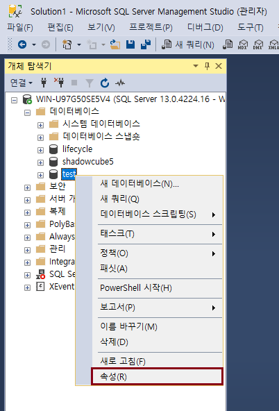

백업과 복원
복구 모델
SQL Server 복구 모델
-
전체 (Full): 모든 트랜잭션을 로그에 기록함. 문제 발생 시점까지 복구 가능하고, 원하는 시점으로 복원할 수 있음
-
대량 로그 (Bulk-logged): 데이터가 중요하지만, 대량의 벌크 로그는 남기지 않도록 할 경우
-
단순 (Simple): 트랜잭션이 완료되면 자동으로 트랜잭션 로그를 삭제하고, 테스트나 개발에 적합
복구 모델 변경 방법
-
데이터베이스 > 속성

-
옵션 > 복구 모델 선택 후 확인
처음으로
이전
다음